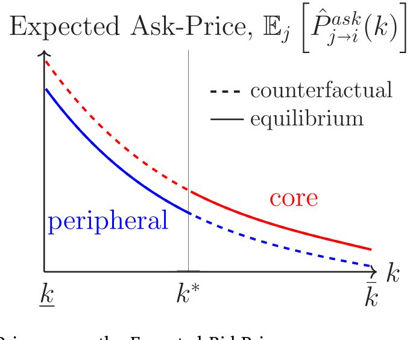
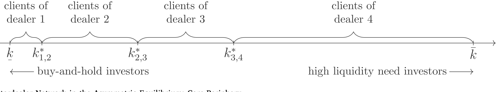
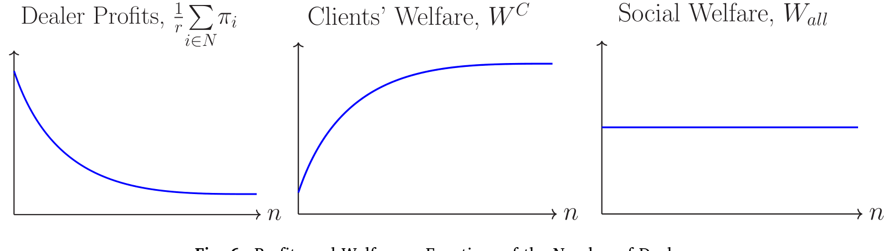
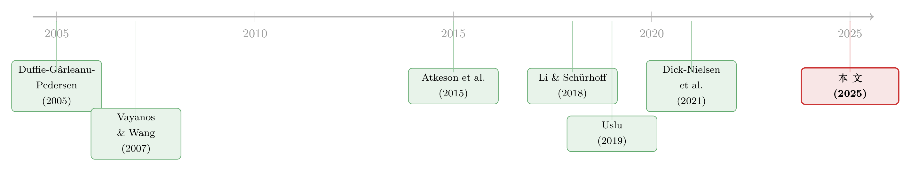

同样的交易商，不同的客户：核心—边缘网络是被「挑」出来的
本文读的是 Sambalaibat (2025, Journal of Financial Economics)：在一个搜寻模型里，做市商事前完全一样，但交易需求各异的客户会「自己挑」做市商——招揽到频繁交易客户的做市商订单量大、彼此交易多，长成网络的核心；专做「买入持有」客户的，则沉到边缘。换句话说，场外市场上那张核心—边缘网络，未必是做市商天生不一样，而很可能是被客户的分层「挑」出来的。
1 一个被反过来问的老问题
凡是研究过场外市场 (over-the-counter, OTC) 的人，都见过那张图：十到三十家高度互联的做市商 (dealer) 包揽了绝大多数的交易商间交易，构成网络的核心 (core)；另有成百上千家做市商交易稀疏、零星挂在外围，构成边缘 (periphery)。公司债、市政债、资产支持证券——核心—边缘 (core–periphery) 结构几乎是 OTC 市场的「标准长相」(Li and Schurhoff, 2018; Dick-Nielsen et al., 2021)。
那么，核心和边缘的差别从何而来？
过去十年，一整条文献给出的答案高度一致：做市商事前 (ex-ante) 就不一样。在 Atkeson et al. (2015) 里，事前拥有更多交易员的银行成为核心；在 Uslu (2019) 与 Neklyudov (2019) 里，事前撮合效率更高的做市商成为核心。逻辑都很顺：因为你本来就强，所以你居中。
但这篇论文偏要把问题反过来问。作者假设所有做市商事前完全相同——同样的撮合效率、同样的网络位置、同样什么都不挑。然后她追问：如果做市商之间一点先天差异都没有，核心—边缘还会不会出现？
答案是：会。而且推动它的，是一直被这条文献忽略的另一侧——客户 (clients)。
2 真正的核心：客户怎么挑做市商
故事的全部张力，集中在一个看似平淡的设定上：客户在哪家做市商买，就得回哪家卖。
在已有的搜寻模型里，客户每次想交易都随机撞上无穷多做市商中的一个，等于默认建立客户—做市商关系的成本为零。本文反其道而行：一旦你从某家做市商手里买了债，要平掉这笔头寸，就必须卖回给同一家。这不是凭空设定——Hendershott et al. (2020) 记录到，作为美国公司债最大持有人的保险公司，平仓时用的往往就是当初建仓的那家做市商，而且一整年里大多数保险公司只跟一家做市商打交道。背后是实打实的固定成本：要进 CDS 和衍生品市场，客户得跟做市商谈 ISDA 主协议 (master agreement)，一谈就是平均 4–6 个月，律师两头跑 (BIS, 1998)。
有了这条「买卖必须找同一家」的绳子，客户在挑做市商时就得同时盘算两件事：现在要付的卖价 (ask-price)，和将来要收的买价 (bid-price)。
这里是全文的枢纽。均衡里，做市商分成两种报价风格：一种卖价高、但回购时买价也高；另一种卖价便宜、但你要平仓时只给你一个更差（更低）的买价。
接着，一个自然的问题是：什么样的客户会挑哪一种？
关键在于客户的交易需求不同。模型用一个参数刻画它：客户以泊松强度 (Poisson intensity) \(k\) 遭遇估值冲击、从而需要卖出。\(k\) 高的人持有期短（约 \(1/k\)），是流动性需求投资者 (liquidity investor)；\(k\) 低的人打算长持，是买入持有投资者 (buy-and-hold investor)。
把一个 \(k\) 型买家的价值粗略拆开（这是一个示意性的分解，非论文原式，只为说明直觉），大致是这样一个权衡：
$$\hat V_i^b(k) \;\approx\; -\,\hat P_i^{ask}(k) \;+\; \frac{k}{\,r+k\,}\,\hat P_i^{bid}(k) \;+\; C(k)$$
其中 \(C(k)\) 是持有期间领票息的价值。要紧的是回购买价 \(\hat P_i^{bid}(k)\) 前面的那个权重 \(k/(r+k)\)：它随 \(k\) 递增。流动性投资者很快就要变回卖家，回购价对他几乎是「马上兑现」的事，权重大——于是他宁可付更高的卖价，也要挑那个买价更高的做市商。买入持有投资者呢？回购是遥远将来才发生、被狠狠贴现的事，他更在乎眼前的卖价便宜，于是挑低卖价的那家。

Figure 4: The Expected Ask-Price versus the Expected Bid-Price
于是反转出现了：交易需求不同的投资者，自发地分流到了不同的做市商。没有人被分配，是他们自己挑出来的。这正是 Vayanos and Wang (2007) 那个「高交易需求者进一个市场、低交易需求者进另一个市场」的洞见，被搬到了做市商网络的语境里——只不过这里的「两个市场」，就是两家事前一模一样的做市商。
3 模型：从客户的选择到撮合的体量
把直觉落到纸面上。时间连续、从零到无穷。经济里只有一种资产——供给为 \(S\)、持续派发票息流 \(\delta\) 的债券；以及两类主体：客户，和 \(n\) 家事前同质的做市商，记 \(N=\{1,2,\dots,n\}\)。所有人风险中性、以 \(r>0\) 贴现。
客户的生命周期。 高估值投资者持债的流效用是 \(\delta>0\)，低估值是 \(\delta-x>0\)（\(x>0\) 是持有的负效用）。高估值者以强度 \(k\) 遭遇冲击、跌为低估值，低估值是吸收态。投资者以高估值身份进场、买债、持有，直到冲击来临变成卖家、卖出、离场。客户之间的差别，全在 \(k\) 上——它服从支撑在 \([\underline{k},\bar k]\) 上、严格为正的连续密度 \(\hat f(k)\)。买家的类型 \(k\) 对做市商可观测，因而进入成交条款。
选择规则。 一个 \(k\) 型买家进场后，会挑那家让自己买家价值最高的做市商：
$$ \hat\nu_i(k)= \begin{cases} 1 & \text{if } \hat V_i^b(k)>\max_{j\neq i}\hat V_j^b(k)\\[2pt] \in[0,1] & \text{if } \hat V_i^b(k)=\max_{j\neq i}\hat V_j^b(k)\\[2pt] 0 & \text{if } \hat V_i^b(k)<\max_{j\neq i}\hat V_j^b(k) \end{cases} \qquad \text{with}\ \sum_{i\in N}\hat\nu_i(k)=1. $$
\(\hat V_i^b(k)\) 就是上一节那个「现在卖价 + 将来买价」的权衡。客户在挑做市商时，会通过均衡价格内生地把对方的客户结构、网络中心性都盘算进去——这是模型里唯一的决策者。做市商自己什么都不挑，纯属被动撮合。作者刻意关掉做市商的一切决策，就是要证明：单凭客户怎么分流，就足以塑造做市商间的交易网络。
客户质量。 记 \(\hat\mu_i^b(k)\,dk\)、\(\hat\mu_i^o(k)\,dk\) 为做市商 \(i\) 手里、转换率落在 \([k,k+dk]\) 的买家、持有者客户的测度，则其买家、持有者总量为
$$\mu_i^b\equiv\int_{\underline{k}}^{\bar k}\hat\mu_i^b(k)\,dk,\qquad \mu_i^o\equiv\int_{\underline{k}}^{\bar k}\hat\mu_i^o(k)\,dk.$$
卖家总量 \(\mu_i^s\) 同理。\(\mu_i^s\) 与 \(\mu_i^b\) 度量的，正是做市商 \(i\) 手上待撮合的买、卖订单体量。
撮合的两条路。 做市商先在自家客户里配对买卖双方，这叫「内部 (in-house)」撮合，单位时间的体量是
这里 \(cdc\) 取自 Client–Dealer–Client（客户—做市商—客户）。注意它是买、卖客户体量的乘积——撮合是规模报酬递增的 (Weill, 2008)。这一点至关重要：一家招揽到更多频繁交易客户的做市商，\(\mu_i^s\) 与 \(\mu_i^b\) 同时变大，内部撮合量以乘积的速度暴涨。
自家配不上的订单，就走「跨商 (inter-house)」撮合：用 \(i\) 的卖家、\(j\) 的买家，两家合产 \(\lambda\,\mu_i^s\,\mu_j^b\) 条跨商链（即 CDDC 链，\(i\) 是链上第一家做市商）。做市商不持库存——买进瞬间卖出。
到这一步，论文最关键的桥已经架好了：交易商 \(i\) 与 \(j\) 之间的网络权重（成交量），就是 \(\lambda\mu_i^s\mu_j^b\) 之类客户体量的函数。 客户怎么分层 → 各家 \(\mu^s,\mu^b\) 怎么分布 → 网络权重怎么分布。一条因果链，从客户这一侧贯穿到了做市商网络的形状。
4 核心—边缘，是这样长出来的
现在把链条接通。流动性投资者（高 \(k\)、频繁交易）涌向「高卖价 / 高买价」那家做市商。频繁交易意味着这家做市商的买、卖订单都源源不断，\(\mu^s\)、\(\mu^b\) 都大——内部撮合量大，自家消化不掉的、需要找别家对冲的跨商订单也多。它跟所有人都频繁交易，于是成为核心。
反过来，专做买入持有客户（低 \(k\)）的「低卖价」做市商，订单稀疏、周转慢，跨商交易零星，沉为边缘。如图 3 所示，事前完全对称的 \(n\) 家做市商，在均衡里裂成了一张核心—边缘网络——而裂解它的，不是任何先天禀赋，是客户的自我分流。

Figure 3: The Interdealer Network in the Asymmetric Equilibrium: Core-Periphery
这套机制顺手还交了几份「对账单」，跟数据吻合得相当漂亮：
- 网络中心性高度持续。 因为分层来自客户的稳定类型，而非做市商随机抽到的估值，核心永远是核心。Li and Schurhoff (2018) 记录到核心、边缘做市商逐月维持各自中心性的概率高达 93% 与 97%——这是许多标准搜寻模型难以复现的（那些模型里，本期是核心的下期可能随机掉成边缘）。
- 客户—做市商成交量大于交易商间成交量。 模型里前者更大，正对应 Li and Schurhoff (2018)、Hollifield et al. (2017) 记录的「约三分之二是客户—做市商交易、三分之一是交易商间交易」。
（关于「先卖给中间商、再由中间商居中撮合」如何改变市场结果，可对照参见《承诺去交易：为什么「先卖给中间商」反而能治好柠檬市场》；关于股票市场里中介摩擦的角色，可参见《股票，真的是中介「无关」的资产吗？》。）
5 买卖价差的「三副面孔」
讲完网络，论文的第二记重拳落在一个看似技术、实则颠覆的地方：当客户在做市商之间是异质的，买卖价差 (bid–ask spread) 就不再是它一向被认为的那个东西。
市场微观结构的标准教义（Stoll, 2003）说：买卖价差既是投资者面对做市商的往返交易成本，又是做市商赚到的加成 (markup)——同一个数，两层含义。作者证明，这个等式只在「客户跨做市商同质」这一常见假设下成立。一旦客户异质，它就裂开了。
她沿着做市商的撮合链，给出三种对价差求平均的方式：(i) 度量客户面对某家做市商的往返交易成本；(ii) 度量做市商加成；(iii) 实证文献广泛采用、并被大量理论工作沿用的那个度量 (Li and Schurhoff, 2018; Hollifield et al., 2017; Uslu, 2019)。
三种度量在客户同质时重合，在客户异质时分道扬镳。第一层含义：一个捕捉做市商加成的价差，不必等于一个捕捉客户交易成本的价差——Stoll 的等式被打破。第二层更刺眼：那个被实证界广泛使用的价差度量，在客户异质时既不是客户交易成本、也不是做市商加成，两头都不沾。
这意味着，后续实证要测「客户交易成本」或「做市商加成」，就得采用能容纳「不同做市商客户结构不同」的度量，不能再用旧尺子。（中间商加成与信贷市场的关系，另见《钱越来越好借，中间商却越赚越多——「顺序信贷市场」里那条看不见的逆向选择》。）
6 中心性折价，与中心性溢价
最后一步，模型给中心性 (centrality) 与价差的关系下了两个方向相反的预测——而且两者出自同一个机制（客户专业化分层）：
- 客户价差呈中心性折价 (centrality discount)： 挑核心做市商的客户，平均观测到的往返交易成本，比挑边缘做市商的客户更窄。
- 交易商间价差呈中心性溢价 (centrality premium)： 核心做市商对其他做市商收的往返价差，比边缘做市商更宽。
一折一溢，恰好对上 Dick-Nielsen et al. (2021) 的实证：客户交易成本上的中心性折价，与交易商间价差上的中心性溢价，并存。能用一个机制同时解释这两个看似矛盾的方向，是这篇论文很硬的一笔。模型还预测核心做市商赚的加成（利润）反而比边缘做市商小，这又与 Goldstein and Hotchkiss (2020) 用加成口径价差记录的中心性折价相符。
至于福利，如图 6 所示，论文把利润与福利刻画成做市商数量 \(n\) 的函数，借此讨论市场集中度的代价与收益。

Figure 6: Profits and Welfare as Functions of the Number of Dealers
值得一提的是，这套预测把本文跟前一代理论拉开了距离：Uslu (2019)、Neklyudov (2019) 等模型里，客户价差与交易商间价差随中心性是同向变动的；本文则是一折一溢、反向变动——而后者才是数据里看到的样子。
文献脉络
把这条线捋一捋。源头是 Duffie et al. (2005) 奠定的 OTC 搜寻框架，以及 Vayanos and Wang (2007)「异质投资者自我分流进不同市场」的洞见——本文的内核，正是把后者的「市场」换成了「做市商」。

接着是核心—边缘的解释竞赛。Atkeson et al. (2015)、Uslu (2019)、Neklyudov (2019) 提供了主流答案：做市商事前异质（更多交易员、更高撮合效率）造就核心。与此并行，Li and Schurhoff (2018)、Hollifield et al. (2017) 在数据里把核心—边缘、中心性折价/溢价、撮合链这些事实一一钉牢，Dick-Nielsen et al. (2021) 则把「客户折价、交易商溢价并存」这一对硬事实摆上了台面。
本文恰好嵌在「理论想解释、实证已记录」的缝里：它不假设做市商先天有别，而让异质性从客户分层中内生地长出来，并一举对上了那些被旧理论解释不了的方向性事实。
评论与延伸（Q&A + 研究方向）
Q：做市商事前完全相同，凭什么最后会不一样？这不是「无中生有」吗？
不是无中生有，是「对称性自发破缺」。对称均衡（每家做市商各招一半流动性客户、一半买入持有客户）在这里是不稳定的：只要一家略微偏向高买价、吸来更多流动性客户，规模报酬递增的撮合就放大这点优势，客户进一步涌入，强者愈强。最终落到的稳定均衡是非对称的——这正是 Vayanos and Wang (2007) 的逻辑。异质性的种子，是客户的 \(k\) 异质，不是做市商。
Q：「买卖必须找同一家」这条假设是不是太强了？
它确实是全文的命门——作者也明说，若客户能换任一家平仓，专业化分层就不会出现。但她给了双重辩护：制度层面是 ISDA 主协议 4–6 个月的谈判固定成本，债券层面是同一家做市商更熟悉券的契约条款、更愿回购。实证上，Hendershott et al. (2020) 也确实记录到保险公司平仓多用原做市商。可视为对「客户—做市商关系持续性」的一种 reduced-form 刻画。
Q：核心做市商利润反而更小，这难道不反直觉？
表面反直觉，细想很顺。核心招揽的是流动性投资者——这些人交易频繁、议价上更「精明」，对回购买价极敏感，做市商在每笔上的加成被压薄；它靠的是走量。边缘服务买入持有客户，单笔加成厚但成交稀。于是「中心性溢价（对同行收得宽）」与「加成上的中心性折价（对客户赚得薄）」可以并存，并不矛盾。
Q：它跟 Uslu (2019)、Neklyudov (2019) 到底差在哪？
差在异质性的来源和价差的方向。那些模型里做市商事前异质，且客户价差与交易商间价差随中心性同向变动；本文做市商事前同质、异质性内生于客户分层，且两类价差反向变动（客户端折价、同行端溢价）。后者与 Dick-Nielsen et al. (2021) 的数据一致——这是本文区别于前作的实证落点。
Q：模型说交易商间成交量小于客户—做市商成交量，可有些模型恰恰相反？
是的。Farboodi et al. (2023)、Wang (2021) 把「谁是做市商、谁是客户」内生化，做市商间反而交易更多。本文则固定客户与做市商的角色，专注于「客户如何选做市商」如何驱动做市商间的交易模式，于是得到三分之二客户—做市商、三分之一交易商间的划分，对上了 Li and Schurhoff (2018) 与 Hollifield et al. (2017)。两类模型回答的是不同层次的问题。
Q：做市商被设成完全被动，会不会丢掉了重要的现实？
这是作者主动付的代价。她把做市商的一切决策（跟谁连、连多少、报什么价的策略性）全关掉，正是为了干净地证明「光靠客户分流就够」。代价是模型说不了做市商的策略性囤货、单家做市商的价格冲击与系统性风险——这些她列为未来工作，也确实是这类「原子化但非无穷小做市商」框架本可拓展的方向。
（二）几个可能的研究问题与提案
1. 把模型搬到公司债数据上，直接检验「客户分层 → 中心性」。 【经济故事】模型的因果是「客户交易需求异质 → 客户在做市商间分层 → 核心—边缘」。这条链在 TRACE + 客户身份（如 MarketAxess 或监管版带交易对手标识的数据）里是可观测的：能否看到「服务高周转客户（指数基金、对冲基金）的做市商」恰好就是网络核心？ 【可行性】中。核心难点是拿到带客户身份的成交数据；识别上可用客户类型（按换手率聚类）作为 \(k\) 的代理，看做市商中心性是否随其客户构成单调变化。数据到位则相当 doable。
2. 外资持有人是「天然的买入持有客户」吗？ 【经济故事】若外国机构（如主权基金、外国保险）在美国公司债上系统性偏买入持有（低 \(k\)），按本文逻辑，承接它们的做市商会偏向边缘、收更宽的客户价差。外资份额上升，是否在重塑做市商网络的形状与流动性分布？ 【可行性】中。可借助监管持仓数据（如 TIC、或带国别标识的持仓）刻画各做市商的「外资客户暴露」，再与其网络中心性、客户价差挂钩。识别上可用外资税收/监管冲击作为客户构成的外生变动。
3. 当「买卖必须找同一家」的成本被技术压低时，核心—边缘会松动吗？ 【经济故事】电子化交易平台（all-to-all 交易）正在削弱「关系绑定」。模型预言：一旦客户能在任一家平仓，专业化分层就瓦解。那么平台渗透率高的券种，其核心—边缘结构是否更扁平、中心性持续性是否更低？ 【可行性】高。MarketAxess 等平台的 all-to-all 渗透率有时间—券种变异，可做双重差分 (difference-in-differences, DiD)，被解释变量取网络中心性的赫芬达尔指数或核心份额。这是直接能落地的检验。
4. 用本文的「三种价差度量」重测既有实证结论。 【经济故事】如果广泛采用的价差度量在客户异质下「两头都不沾」，那么大量以它为因变量/自变量的公司债流动性研究，结论可能被客户构成的横截面差异污染。把同一批数据用三种口径分别算一遍，结论会变吗？ 【可行性】高。纯数据工作，无需新识别，只需在 TRACE 上分别构造三种度量并比较。是一篇干净的「measurement matters」论文的好坯子。
我的判断
这篇论文最漂亮的地方，是它把因果的箭头掉了个头。整条核心—边缘文献都在问「做市商哪里不一样」，它却证明：把做市商设成全同，只让客户去挑，核心—边缘照样涌现，而且涌现得更「对」——它一口气解释了中心性的高持续性、客户折价与交易商溢价的并存、核心加成更薄这几个旧理论各自难以同时拿下的事实。从「客户分层」到「网络权重 \(\lambda\mu_i^s\mu_j^b\)」那座桥，搭得既简洁又有说服力。
担忧也集中在一处：整座大厦压在「买卖必须找同一家」这一条假设上。作者诚实地承认，松开它分层就垮，并用 ISDA 主协议、Hendershott et al. (2020) 的证据来支撑。但这毕竟是个 reduced-form 的固定成本设定，成本的大小、它在不同券种/客户间的异质性，都没有内生化——而恰恰是这个成本，决定了核心—边缘有多「锁死」。我更想看到的，是把这块固定成本本身做成可观测、可变动的对象（比如借电子化平台的渗透当外生冲击），去检验模型那个最干净的比较静态：成本下降，专业化瓦解。如果数据真的配合，这篇理论就不只是「能对上事实」，而是「能被证伪」——那才是它真正站住的时候。
参考文献
- Atkeson, A., Eisfeldt, A., Weill, P.-O. (2015). Entry and Exit in OTC Derivatives Markets. Econometrica 83(6), 2231–2292.
- Dick-Nielsen, J., Poulsen, T., Rehman, O. (2021). Dealer Networks and the Cost of Immediacy. (Working Paper / Rev. Finan. Stud.)
- Duffie, D., Gârleanu, N., Pedersen, L. H. (2005). Over-the-Counter Markets. Econometrica 73(6), 1815–1847.
- Farboodi, M., Jarosch, G., Shimer, R. (2023). The Emergence of Market Structure. Rev. Econ. Stud. 90(1), 261–292.
- Goldstein, M. A., Hotchkiss, E. S. (2020). Providing Liquidity in an Illiquid Market: Dealer Behavior in US Corporate Bonds. J. Finan. Econ. 135(1), 16–40.
- Hendershott, T., Li, D., Livdan, D., Schürhoff, N. (2020). Relationship Trading in OTC Markets. J. Finance 75(2), 683–734.
- Hollifield, B., Neklyudov, A., Spatt, C. (2017). Bid-Ask Spreads, Trading Networks, and the Pricing of Securitizations. Rev. Finan. Stud. 30(9), 3048–3085.
- Li, D., Schürhoff, N. (2018). Dealer Networks. J. Finance 74(1), 91–144.
- Neklyudov, A. (2019). Bid-Ask Spreads and the Over-the-Counter Interdealer Markets: Core and Peripheral Dealers. Rev. Econ. Dynam. 33, 57–84.
- Sambalaibat, B. (2025). Heterogeneous Clienteles and Dealer Networks. J. Finan. Econ. 174, 104185.
- Stoll, H. R. (2003). Market Microstructure. In: Handbook of the Economics of Finance, Vol. 1A, 553–604. Elsevier.
- Uslu, S. (2019). Pricing and Liquidity in Decentralized Asset Markets. Econometrica 87(6), 2079–2140.
- Vayanos, D., Wang, T. (2007). Search and Endogenous Concentration of Liquidity in Asset Markets. J. Econ. Theory 136(1), 66–104.
- Weill, P.-O. (2008). Liquidity Premia in Dynamic Bargaining Markets. J. Econ. Theory 140(1), 66–96.